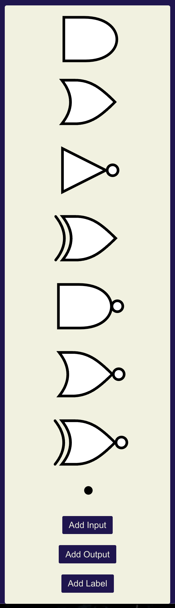

CircuitCraft
A circuit diagram drawing software for education
Using CircuitCraft, you can easily build circuit diagrams within your browser. This page documents how to build your diagram.
In CircuitCraft, the page consists of three different areas:
- Menubar: Purple area at the top of the page

- Canvas: Blue area to the left under the menubar

- Toolbox: Yellow area to the right under the menubar

Menubar
Contains dropdown menu for 'File' and a link to the help page.
To interact with the dropdown menu: Click 'File' to open the menu. Click 'File' again to close the menu.
Canvas
This is where you will draw your diagram.
Navigating Around the Canvas
- To move around the Canvas: click and drag on the canvas
- To zoom in and out of the Canvas: scroll up or down on mouse or pinch in and out on trackpads
Toolbox
This contains interactable objects that are in the form of gates, junctions, inputs, outputs, and labels.
Gates

Junction
Inputs, Outputs, and Labels
Adding
To add objects to the canvas, click the object you want to add: gates, junctions, inputs, outputs, and labels from the toolbox. They will then add to the canvas, if you add multiple objects at a single time, they will overlap and hide behind each other.
Removing
All objects on the canvas can be removed by selecting the object so that a rectangular outline appears around the object. Hit the 'backspace' or 'delete' key.
Double click the default name such as "Input 1", "Output 1", "Label 1" and a textbox will surround the default text. To save the changes, simply click off the input, output, or label.
All gates, inputs, and outputs have a black rectangle, clicking the end will begin the creation of a wire to connect the objects.
Objects: Click and drag the object. This can be more difficult with the junction due to it's size.
Wires: Click a wire (turning it dark grey) then click and drag to move the edge around.
Selecting a gate will reveal the blue outline, click and drag the blue squares to make the object bigger or smaller. When a gate is placed on the canvas, it cannot be any smaller.
Hovering over a gate or selecting a gate will reveal a purple handle, click the purple object to rotate the gate.
Under 'File' there is 'Save' which will download a json file, this can be uploaded to CircuitCraft with open and restore the diagram.
'Export PNG' will download a png which can be used to submit on canvas.
Under 'File' there is 'Open' which will allow you to upload a previously saved json file of the circuit diagram.